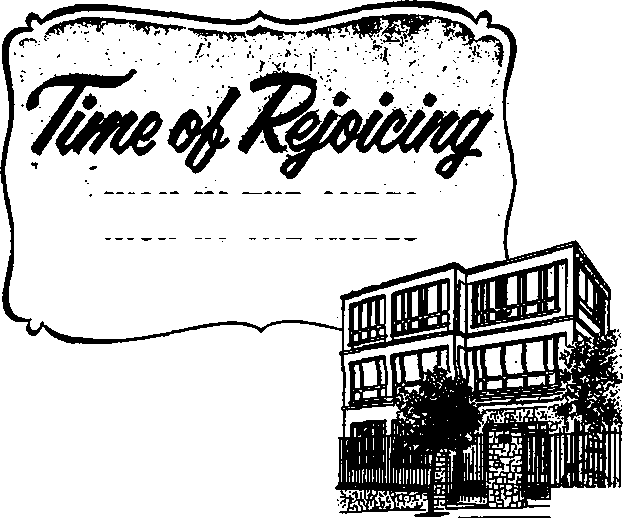
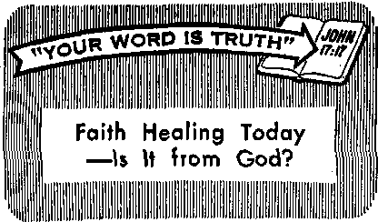

The Pleasure of Listening to Grandparents
Keep Your Home Cool During Summer Heat
Supreme Court Agrees: Your Children Do Not Delong to You
Meet Alaska’s King Crab
JULY 8. 1968
THE REASON FOR THIS MAGAZINE
News sources that are able to keep you awake to the vital issues of our times must be unfettered by censorship and selfish interests. "Awake!" has no fetters. It recognizes facts, faces facts, is free to publish facts. It is not bound by political ties; it is unhampered by traditional creeds. This magazine keeps itself free, that it may speak freely to you. But it does not abuse its freedom. It maintains integrity to truth.
The viewpoint of “Awake!" is not narrow, but is international. "Awake!” has its own correspondents in scores of nations. Its articles are read in many lands, in many languages, by millions of persons.
In every issue "Awake!" presents vita! topics on which you should be informed. It features penetrating articles on social conditions and offers sound counsel for meeting the problems of everyday life. Current news from every continent passes in quick review. Attention is focused on activities in the fields of government and commerce about which you should know. Straightforward discussions of religious issues alert you to matters of vital concern. Customs and people in many lands, the marvels of creation, practical sciences and points of human interest are all embraced in Its coverage. “Awake!” provides wholesome, instructive reading for every member of the family.
“Awake!” pledges itself to righteous principles, to exposing hidden foes and subtle dangers, to championing freedom for all, to comforting mourners and strengthening those disheartened by the failures of a delinquent world, reflecting sure hope for the establishment of God’s righteous new order in this generation.
Get acquainted with "Awake!" Keep awake by reading ‘'Awake!"
Published Simultaneousia in the United States bt the WATCHTOWER BIBLE AND TRACT SOCIETY OF NEW YORK, INC. 117 Adams Street Brooklyn, N.Y. 11201, U.S.A,
and in England
WATCH TOWER BIBLE AND TRACT SOCIETY
Watch Tower House, The Ridgeway London N.W. 7, England N. H, Knorr, President Grant Suiter, Secretary
Average printing each issue: 5,100,000 5d t copy (Australia, 5c; South Africa,
Yearly subscription rates
Offices for semimonthly editions
America, U.S., 1)7 Adams Street, Brooklyn; N.Y. 11201 $1
A astral la, 11 Beresford Bd., Btrathfleld, N.S.W, 2135 11
Canada, 150 Brldgelanrl Ave., Toronto 19, Ont $1 England. Watch Tower House,
The Ridgeway, London N.W. T S/3
Hew Zealand. 021 New North Rd., Auckland 3 UOc Scith Africa, Private Bag 2, P.O. Elandsfonteln, Tri. 70c (Monthly edition* cost half the above rates,)
Remfttatteee for «ubserlpt ion a should be sent to the office Jn your country. Otherwise send your remittance to Brooklyn.
Notice of expiration Is sent at least two item before subscription expires.
The Bible translation regularly ised In “Awake!" Is the Ni
When other translations are
Now published in 26 languages Semimonthly—Afrikaans, Cebuano, Danish, Dutch, English, Finnish, French, Gertnan, Greek, Jlukd, Italian, Japanese, Korean, Norwegian, Portuguese, Spanish, Swedish, Tagalog, Zulu.
Monthly—Chinese, Ctny&nja, Hlllg&ynon, Malayalam, Polish, Tarnj], Ukrainian.
CHANGES OF ADDRESS shoo Id reach is thirty days before your moving date. Give u» year old and new address (If possible, your old address label). Write Watch Tower, Watch Tower House, The Ridgeway, London N.W. 7, England.
Entered uts becond-claas matter at Brooklyn, N.Y.
Printed in England •
World Translation of the Holy Scriptures, 1961 edition, id. this la clearly marked.
CONTENTS
The Pleasure of Listening to Grandparents
Keep Your Home Cool
Supreme Court Agrees: Your Children
Time of Rejoicing High in the Andes 25 “Your Word Is Truth”
Faith Hfaling Today

Grandfather was wen over eighty.
He was a tall man with gentle blue eyes and a bushy, white beard. He had a wonderful face, with an aura of great dignity and composure. He was our friend and confidant.
Grandpa loved to walk. He especially liked walking in the sand along the seashore. We liked him best when he would take us along and carry us about "piggyback” and talk to us about God. Sometimes grandpa would burst out and sing. He had a scratchy high tenor' voice. Grandma wished he would stop singing, because he really could not carry a tune, but we liked it. When we joined in and sang together, it made us feel good at heart.
Grandpa loved the Bible and taught us how to read it. Every night after supper grandma would get out the big black book and grandpa would say, “What will it be tonight?” Each night he would read a different story. Grandma’s favorite was the book of Ruth. We liked Joseph and his brothers or David and Goliath. We were fascinated with these stories. Grahddad would read aloud, because he read better than the rest of us. Often he would tell us how things in the world have changed since 1914. "You can see it in the papers and in the attitude of the people,” he would say. “People have become lovers of themselves, lovers of money, selfassuming, haughty,.blasphemers; children have become disobedient to parents, unthankful, disloyal. There’s little natural affection left in the world; people are not open to any agreement, many are slanderers, without self-control, fierce, without love of goodness. We live today among betrayers, people who are headstrong, puffed up with pride, lovers of pleasures rather than lovers of God. And that’s what the Bible said they would be in the 'last days,’ ” granddad would say with a smile.—2 Tim. 3:1-5.
However, as we grew older our interests changed. When my brother Jim and I became teen-agers we began to think that granddad lived in a dream world. Nevertheless, we enjoyed being with him because he loved life.
For example, when he would walk in the sand he would look at the patterns beneath his feet. He held up pieces of wood and stone and examined them. “A shell!’* he shouted one day, with absolute delight. “Look! It still has the sunrise in it!” We rushed over to have a look. We had passed such shells a thousand times. Now suddenly I felt new wonderment, not so much at the shell, but at my granddad who was so much alive. He was more alive than we were,
I found myself thinking about grandpa. There was something different about him, something so simple yet so profound that I could not quite grasp it. Out of the corner of my eye I could see that he was not putting on a show for our sake. His face turned skyward to watch a sea gull ride the stream of the wind. His mind was in fascination. “O that’s beautiful!” he said, and then looked at me. He was happier than a child. He had the secret of living. He did not regret the past or flinch from the future. He lived in the present.
I said: “Granddad, you enjoy life so much. What’s your secret?”
He smiled and quoted the words of Christ: “Never be anxious about the next day, for the next day will have its own anxieties.” (Matt. 6:34) He was a living example of the truthfulness of those words.
Even as teen-agers it was a treat to visit grandpa and grandma. They lived in an old wooden farmhouse that had seven rooms and an attic. The attic was a museum where Jim and I spent hours rummaging through old things. One day jokingly we said to granddad that we wanted to ransack the attic and “see the great change that has come over the world.” He sensed the sarcasm in cur words.
“You don’t believe me when I say times have changed, do you?” Without waiting for an answer, he marched upstairs, went directly to an old trunk, opened it and pulled out some yellow-looking papers. We crowded around him and were amazed to see that the papers were dated 1907, 1909, 1910, 1913 and 1914.
“Look through these papers,” he said, “and you’ll see none of the big-time crime, murders and wars we have today. I know how you young ones think. You think we old folks dream these things up.”
A tinge of embarrassment swept over us. There was The Evening Journal from Wilmington, Delaware. It had twelve pages and cost one cent. The date was December 20, 1913, and it read like some folksy country newspaper.
“You’re surprised, aren’t you?” granddad remarked with a twinkle in his eye, as he watched our 'facial expressions. “This was a big newspaper back there, but people were friendly and you can tell it by the way the paper reads. Now note the difference in the tone of the news from June 29, 1914, and after. Here’s the New York Times; read it for yourself.” There were threats of war in the air and the news was as somber as it is today.
The smell of the attic and old newspapers made the setting ideal to ask granddad about some of the things Jim and I talked about in private. I nudged Jim to speak up.
“Granddad,” said Jim, “tell us what was so different about those days. Farmers didn’t have tractors, milking machines or anything. It was just all hard work on the farms and in the factory, wasn’t it?”
“It’s true,” grandpa said, “we didn’t have tractors, but we had horses. Do you know what it’s like to own a horse, to feed it, to have it eat oats out of your hand, to brush it until it shines? Let me tell you, son, there’s something really nice about that feeling that you don’t get from owning a tractor.”
“Yes, grandpa, but walking behind a plow acre after acre is enough to kill a man!" Jim countered.

“I’ve lived a long time, son, and I have yet to see a man get killed from walking behind a plow. It’s all this sitting down that does the killing,” said granddad. “Daniel Webster once made a special plow for plowing up stumps and roots on his farm. He said he was never happier than when following his huge plow drawn by his heavy ox team. And I agree.”
Grandpa then sat on the floor with his back against the old trunk and began to 1 talk to us in a more serious tone. “I’ve often told you boys that times were different when I was your age, that these are the ‘last days’ that we’re living in, but you don’t seem to understand. You’ve been bom into a world of airplanes, paved roads and automobiles. Your farms have machines on them and your food is all packaged and cellophane wrapped. Your meat is all prepared and your bread is baked
for you. I remember when none of that was.”
Grandpa smiled and for a moment did not say a thing, but we could almost hear him thinking. So we coaxed him to tell us about the people he knew and what made him so sure that these were the “last days.”
Jim, in the modern vernacular, said, “Tell it like it is, grandpa.” And granddad gave him a great big smile. “I will, I will,” he said, as he adjusted his back against the trunk.
The Differences in Times . “I remember a certain street. I went to college there. There wasn’t a car in sight. When grandma and I 'went back there after some twenty-five years, we couldn’t find a place to park our car. That’s one big change in the world,” granddad said.
“Another change is this: We used to do a lot of walking in those days. It was possible to meditate then. You could cross the city' streets while meditating without fear of being struck by a passing vehicle. Don’t try that today. What I’m trying to say is that life was not rushed. Today everything must be done in a hurry, and it became that way first during World War I.”
Jim interrupted: “I wish we weren’t so rushed today, grandpa, but there are just simply too many things to do. So we have to rush.”
“We’re trying to do too many things, son. That’s our problem,” said granddad. “Let me tell you about a friend of mine,” continued granddad. “He was a short, thin man with black eyes, but full of life. He traveled from Germany to France to Canada without a passport or any meaningful identification. Upon arrival in Quebec, the only thing he was asked was, ‘What work do you want to do?’ Try doing that today. After World War I, he wrote to his father in Germany about the good news of God’s kingdom that he had learned while in Canada, and his father wrote back: ‘Son, the good old times are no more.’ World War I changed things. Life became different after the war. The mood of the world changed. People no longer trusted one another. They became, as the Bible says, ‘fierce, prideful, haughty and terribly selfish.’ ”
Changes in Family Life
Granddad came from a large family, a family of nine. Families were big. Grandpa loved to talk about his father and mother and the family life he enjoyed, so we prodded him to highlight the changes for us.
He began slowly. “There was family life. Members of the family talked to one another. There was no radio nor television to distract them or to rob them of conversation. Now the home has become a movie theater where members of the family sit silently in semidarkness watching the flickering television screen. If anyone says anything, immediately he’s drowned out with sshli! from interested viewers. We were nine children. And we all enjoyed talking. Chatter, chatter, chatter! Father would say, ‘Children! Please don’t talk more than seven at a time!’ It was this family life that was lost after World War I. It may still exist in some parts of the world, but not in many. In the Western world family life has all but disappeared.”
“But what did children do for entertainment?” we asked.
He thought awhile and smiled as his own thoughts amused him. “You make me see myself when I was a boy. So often we used to sit around the room and play games with father. We played dominoes,
“Also, I owned a bicycle. In groups we would go riding through the countryside. It was safe to ride on the roads, because there was no danger of getting hit by the traffic. As teen-agers we would do this. In the winter we went sleigh riding and skiing. During vacation time, groups of us would go mountaineering. For two to three weeks we slept out in the hay, did our own cooking, drank milk straight from the cow. There are still some places where youngsters do these things, but not as a rule. When I went for a vacation, father would figure how much money I needed. If I spent it too fast, I would just have to do without or come home. There was no wiring father for more money. So you see, entertainment was wholesome, clean and healthy. We weren’t thrill seek-efs in a bad way. We enjoyed good, clean fun.”
The Personal Touch
Granddad reached into his pocket and pulled out a bag of dried figs. He passed them around. “We used to eat these when we were children. We ate dried apricots too, and we chewed them all winter long. There were no supermarkets back then. Stores were privately owned and usually operated by a family. You got personally acquainted with them. You shopped leisurely. They used to weigh everything, because so much of what you bought was in the bulk. Menfolk used to stand around in the store and talk, sometimes for hours. The store I have in mind had everything from toothpicks to coffins. I remember that this old Italian storekeeper would tell me the things to buy and the things not to buy. That sort of intimate relationship doesn’t exist today. This confidential, homey friendship between storekeeper and customer was not only in small towns but in big cities too. Try to find that today,” granddad said with a strong emotional tone. "The Bible says, ‘The love of the greater number will cool off,’ and it has. (Matt, 24:12) Going to town and shopping on Saturdays was one of the things we used to enjoy. Not many people really enjoy shopping anymore.” Then he stretched himself a bit and said:
"When I was three or four years old, mother sent me to a pastry store. When it came time to pay for the cookies I bought, I innocently gave the storekeeper an old pen without the penpoint. He took it as if that were the right price and, without saying a word, gave me the cookies. Then we children went out of the store and shared the cookies among ourselves. Where do you hear of storekeepers doing such things today? That goodness is nearly.gone. After World War I people became impersonal. So many of them treat one another as strangers. They are cool and distant. This is the terrible change that has come over the world.
“Take, for example, our family doctor. When he died, you should have seen the crowd that came out to his funeral. How many go to a doctor’s funeral anymore? Natural affection is gone.
“Another place where I see big changes is in our public libraries and among teachers. The librarian took an interest in the books I was reading. In fact, she advised me what to read. How many librarians do that today? And schoolteachers had a more intimate and personal relationship with their pupils. Some eight years after I was out of college, my history professor and I accidentally met on a street. He was delighted to see me and asked about my health and what I was doing. He invited me to come to his home right then and there. And we 'spent a pleasant hour with coffee and refreshments. How many teachers take such interest today? Now, I’m not talking about an isolated case. This is the way people were back there. So when we say things have changed since 1914, they truly have changed for the worse. That personal, friendly touch is almost gone.”
Crime and Morals
Jim interrupted granddad and asked about crime and morals of the people. “Was it anything like it is today, grandpa?” he asked.
“No, no, no—goodness no!” granddad said. He told of a friend of his who was raised in Marengo, Illinois, who never knew what a policeman looked like until he was ten. years old. No one even thought of locking his house. On the inside of the house door was a latch that was hooked to keep the wind from opening and banging the door. He could not even remember if they ever got a lock and key.
“For a while grandma and I lived in a big city apartment. Our door was often left unlocked all' night. I usually came home from my theater work after midnight and the door was unlocked and the family was fast asleep inside. You wouldn’t dare do a thing like that today in most parts of the world.”
In confidential tones granddad then began to tell us about his courting days:
“When I was quite young I fell in love with a girl. When I courted her, we would go to a park together. We could go to any park without any danger whatsoever, even to parks in the outskirts of any city, I never heard of anyone being harmed. There were no police in sight.
They weren’t needed there. The present crime and general immorality were unheard of—very, very rare. I do recall that once a friend of mine tofd me of a girl that was raped, and we were truly horrified, shocked! ‘What kind of animal would do such -a thing?' we asked ourselves. There was righteous indignation in those days. Today many people read about such things every day without being moved. This ‘increase of lawlessness’ that the Bible speaks about is another terrible change that has come over the world since World War I. (Matt. 24:12) To many, crime is no longer shocking. Criminals are' pampered and protected today by courts and people alike. This would never happen when I was a boy.”
Granddad then got up from where he was sitting and got the old family album and showed us pictures of his sisters. He had five of them. ‘‘None of my sisters smoked,” he said. “If any girl smoked and used cosmetics heavily, she was'looked upon as an immoral woman. Illegitimacy was practically unheard of. Birth of a child out of wedlock was scandalous! Today it is more or less the accepted thing. Adultery was as bad as murder. Divorce was intolerable. It was just not to be. An abortion was plain murder. An actress who was involved in what was called the moral scandal of the century in 1948, according to Look magazine for March 5, 1968, said: ‘The new generation . . . doesn’t think as in 1948. The young people react with astonishment when they hear the story of the hate that burst around me. They ask: “Why?" And when they are told, they smile, saying: “Is that all? So what?” But nobody smiled in those years. I didn’t either.’ She’s right, people don’t think today the way they did in 1948. And I can tell you that they don’t think the way we did before 1914. That, too, is a big change."
Granddad was a great one for telling us that people back there had instilled in them the righteous principles of the Bible. But we responded, “Why, then, did they fight and go to war?” Grandpa paused briefly, and said:
“You're right, son, they did go to war. But the thoughts of the people were different than now. During World War I, what we call a ‘Christian’ attitude prevailed among many persons. Farmers were talking among themselves, saying, ‘Why should people from nations professing to be Christian, such as England and Germany, be killing one another?’ They couldn’t understand it either. But the Methodist preacher, I remember, each. Sunday drove home the point that it was God’s will for young men to fight for their country. It was the preachers that got the people to thinking war was all right. Now most people aren’t concerned whether war is Christian or not. All they want to know is if it’s ‘moral.’ They don’t seem to know that only God can fight a moral war.”
Grandpa was a man who had lived over eighty years. “Today,” he said, “young people read a lot. They see a good deal more on television and hear even more over the radio. Their minds become all caught up with problems that my generation never knew. This brings tension, frustration and probably they will not live as long as a result of all this that they call progress.”
So I asked granddad if he would rather have lived the way he did in the past or know what young people today know and not live as long. He slowly turned and put his arms around our shoulders and said:
“What good is all the knowledge in the world, my sons, without moments like this? Living brought me this. We need to live. And living forever would be the most favorable position to be in. That’s why we must serve God, for he's the only One who can give us eternal life. The events of our day are fulfillment of prophecy. The year 1914 was a turning point in the affairs of men. Can’t you see that, boys?”
“Yes, grandpa, we see that things have changed since 1914 and what ±he Bible has said has come about, but what does all that mean for us teen-agers, grandpa?” asked Jim. .
“That means, son, that these are the last days of this wicked system of things and that we are at the threshold of the 1,000-year reign of Christ, where mankind will enjoy abundant life.
“That means young folks like you, Jim, have the possibility of living forever without ever dying, without growing old like your grandpa, without the sickness and the disease and the crime of this world. My boys,” said granddad, "these are the last days for this wicked old system of things. Do all you can now toj learn God’s will and serve him now, because the time is short."
That talk with grandpa impressed us deeply. We could see that times have changed, that we truly are living in the last days of this wicked system of things, that the world since 1914 is experiencing death throes and that it was about time that we aligned ourselves solidly on the side of God’s Kingdom rule.
As we left the attic Jim and I firmly gripped granddad’s hand, showing how much we appreciated his wisdom and direction. The Biblical command came to mind: “Before gray hair you should rise up, and you must show consideration for the person of an old man, and you must be in fear of your God. I am Jehovah.” (Lev. 19:32) Both of us looked at granddad with admiration and thought, “How true! How true those words!”—By Awake! staff writer.
Keep Your Home
During Summer Heat
AS THE chill of winter gives way to spring blossoms, one eagerly looks forward to milder weather. To inhabitants of many areas, though, delightful springtime temperatures soon give way to blistering summer heat, Then it is time to begin preparations for the hot days ahead.
Your home usually is the center of attention in this respect. Therefore, consider a few practical and simple suggestions
Cool

that can help you to keep your home cool during hot weather.
Value of Shading Devices
As the sun is the sole source of heat to warm the earth, it is, though necessary to our life, obviously the offender in the summer heat. Even the animals are able to sense this, and thus take refuge in the shade. Humans do the same, heading for cover to escape the sizzling rays of the sun. This sanctuary may generally be your home.
There the sun’s radiation, or solar radiation, is the major cause of heat buildup. In the United States and in other northern latitude areas, the south and west exposures are the most critical as far as the sun is concerned. If these exposures contain large areas of glass, abnormally high temperatures can occur, thus rendering these portions of the building virtually uninhabitable. To avoid this condition, therefore, one must arrange to keep the sun out as much as possible, particularly on these sides of the house.
The most effective way to reduce solar heat is by shading devices that are placed outside the building, and which allow free air circulation between the device and the building. This reflects and absorbs heat before it gets to the surface of the wall or window. Generally speaking, where such exterior shading occurs, the solar heat entering the building will be reduced to approximately 20 percent from what would be realized if the building were directly exposed to the sun.
Exterior shading by trees is a practical way to help cool your home during summer, Awnings and various shading screens also qualify in this category. And large roof overhangs have become common, particularly in single-story buildings. The need and practicality of these shading devices have done much in recent years to influence modern architecture.
If some type of exterior shading is not feasible where you live, the next-best thing is an interior shading device. Medium-colored Venetian blinds, if slats are maintained to keep out the sun, will reduce the heat entering the window to 64 percent of that entering through the window^ if it were without shades and in the sun. If the Venetian blinds are light in color, this figure will drop even farther; and, if white, they will reduce this figure to 25 percent.
Drapes at the windows are also very important in keeping the summer heat out of your home. Keep in mind that the'lighter the color and the closer the weave the drape material is, the more effective the shading relief obtained.
In addition to the above-mentioned items, there are numerous glass-coating materials, known as “solar coatings.” They are applied on the inside of windows and can reduce solar heat considerably. Maintenance of these windows poses no real problem, provided brushes are not used to wash the windows.
In general, if the building surfaces are lighter in color, the heat increase in the structure will be somewhat less than if they are of a darker color. Light-colored roofs obviously will reflect more heat than dark roofs. However, if you live in an area where considerable smoke or haze is prevalent, the roof will soon become dulled and darkened by air contaminants, and their reflecting values soon diminish considerably.
Heat Increase from Roofs
Unless glass areas are rather extensive, the roof may be the largest producer of inside heat. This stems primarily from the fact that the roof is the largest single area that is exposed to the sun for the longest time.
If it is 95° F. outside, 75° F. in your house and you have a tar and gravel roof with one-inch nominal thickness wood construction underneath, at 2 p.m. the “equivalent” outside temperature just above the roof surface will be in excess of 160° Fd If the same roof is two-inch nominal thickness wood instead of one inch, the equivalent temperature will be reduced to about 140° F. However, if the one-inch thick uninsulated roof is wetted, as with some sprinkling device, the equivalent temperature will be reduced to 96° F., and if the roof is flat and under six inches of water, it will be lowered to 81° F.
If you have an attic, you will realize a considerable reduction in heat provided you ventilate the attic with a simple mechanical fan. Also, by adding insulation on the ceiling portion of the attic further reduction of heat may be realized.
Ventilation and Cooling Equipment
If you have elected to employ the use of mechanical equipment to cool your home, a fan will prove the most economical method. The fan should be at least eighteen or twenty inches in diameter if the propeller type is used. If the fan is of . the portable type, it is practical to use it to circulate the air within the house as long as the temperature inside is cooler than outside. When the nights are cool, the fan may be used as a window fan, with the discharge air being directed to the outside. If you live in a two-story house, the fan should be placed on the second floor to remove the warmer air that naturally rises.
Where the climate is fairly dry, evaporative coolers can be used to obtain relief from the summer heat. The utilization of evaporation is possibly the oldest method in man’s attempt to produce comfort in hot weather. In ancient times wetted grass mats and porous jars were employed in the evaporative process to cool air or water. Early settlers of the southwestern United States found Indians using such devices.
Most residential-type evaporative coolers, sometimes called "swamp coolers,” are the wetted-pad type containing evaporative pads. These are usually made- of aspen wood fibers, and have a watercirculating pump. This pump lifts sump water to a distributing system, which causes the water to run down through the pads and back to the sump. A fan within the cooler draws air through the evaporative pads and delivers it into the space to be cooled. These units generally are placed either on the roof or on an outside wall, and windows are opened at distant points to allow air to pass to the outside.
However, a word of caution if you are contemplating this type of cooler. Unless 100 percent outside air is used and is allowed to pass to the outside again, a humidity buildup will occur, which actually worsens conditions. Some people set these smaller "water coolers” inside the room and recirculate the air back through the unit. In this case the cooler soon ceases to be a cooler. It becomes, instead, a humidifier, virtually saturating the room air with moisture in due time, thus defeating its intended purpose.
More expensive, but generally much more efficient, are air-conditioning machines that not only cool the air but dry it as well. Window or through-the-wall-type refrigeration air-conditioners are becoming more numerous on the market today and are becoming more competitively priced. This type of unit reduces initial and operating costs that would be incurred in a central air-conditioning system. While noisier than the central system, most residential applications are quite acceptable, and you need not cool the entire house.
If you are planning to install one, be sure that the electrical system will be able to accommodate the additional electrical load. Filters should not be allowed to become too dirty or the unit’s efficiency will drop drastically and possibly will cause icing up of the cooling coil. Adequate air circulation should be assured around the portion of the unit outside the house, as this is the means used to dissipate the heat taken from the air-conditioned space.
Depending on the amount of time, effort and money you may wish to invest, there are a great variety of ways of keeping your home cool during the summer heat.
SUPREME COURT AGREES:
(irpHAT is im-± possible,” you might respond. “There must be some mistake. The Supreme Court of the United States would never agree with such a decision.”
Yet, as shocking as it sounds, this is exactly what has occurred. On April 8, and again on May 27, 1968, the Supreme Court of the United States upheld just such a ruling by refusing to hear an appeal from the decision of a lower court. The case involved the question of who should determine the medical treatment given to children—the doctors and hospital or the parents of the children?
Parental Rights Overruled
In recent years some doctors have challenged the parents' right to make that decision. They have insisted that they, and not the parents, should have the final choice as to what treatment should be administered, They have even forced their choice of treatment upon children, over their parents’ objections.
For example, Cleveland, Ohio, doctors some time ago urged that an operation be performed on a fourteen-year-old girl who had cancer of the hip. However, the mother objected to use of surgery in treating the cancer. Therefore, hospital authorities
obtained a court order from Judge W. G. Whitlatch, taking the child from the custody of her parent, and performed the operation over the mother's objection.
In other cases, certain doctors have felt that the only form of effective treatment is blood transfusion. For example, they often have insisted that children born with the Rh disease erythroblastosis fetalis can be treated successfully only by exchange transfusions, in which the blood of the newborn child is replaced by ddnated whole blood. However, some parents have, for sound reasons, desired that their children receive treatment other than blood transfusions. Yet the doctors have gone ahead with the transfusions anyway, over the objections of the parents.
Do you approve of such a practice? When parents desire one form of medical treatment for their child and doctors want another, do you believe it proper that hospitals and doctors should be able to obtain a court order to secure custody of the child and administer the treatment they think best?
It was just such issues that were presented to the Supreme Court. And, by its action, it sided with the doctors and the hospitals, endorsing their action of forcing blood transfusion upon minor children. Thus, the Court, in effect, said: Your children do not belong to you. Medical men can seize them when they see fit and administer the treatment they desire.
Implications of the Decision
It is sobering, yes, frightening to consider the practices to which this decision of the Supreme Court opens the door. If you as a parent cannot decline for your child a blood transfusion, then what assurance does any American parent have that he can decline for his child any other surgical procedure or treatment of an experimental type, whether the doctor involved is competent or incompetent?
By clear implication, if, in the opinion of the doctor, a child needed a heart transplant, kidney transplant, removal of organs, or some other operation, would he not feel free to proceed with such treatment whether the parents approve or not? Nqt only that, but if, in the opinion of the doctor, your child was dying, but had a good heart or some other organ that might be used in another child, might not the doctor, on the basis of the freedom given him by the Supreme Court, feel free to remove the heart or other organ of your child and transplant it into some other child?
Then, too, being granted freedom by the Supreme Court to force treatment upon minor children, some doctors undoubtedly will consider this license also to force medical treatment upon adults over their objections. This is bound to be the case, since some doctors already have taken upon themselves to do this very thing.
For example, in Miami, Florida, Mrs. Regina Sovner was told by doctors that she should have her gangrenous leg amputated. She refused, apparently preferring to take the chance of dying rather than to live without a leg. The doctors did not agree with her decision, and a court order was obtained authorizing the operation. The patient was forced to have her leg amputated despite her strenuous objections.
In considering this matter of individual rights in connection with medical treatment, an editorial in The Trentonian, (Trenton, Ontario), November 8, 1967, asked: "Are we not all in the position where what we seek from doctors is advice, which, theoretically, we are at liberty to reject? Or does the law think a doctor is infallible, and we must always accept his say-so?”
The Supreme Court of the United States has, in effect, ruled that the “doctor is infallible, and we must always accept his say-so.”
Abetting Medical Abuses
The danger in giving doctors such unlimited freedom is pointed up by the results of a seven-year study by Dr. Raymond S. Duff, a pediatrician who teaches at the Yale University Schoo) of Medicine, and Professor August B. Hollingshead, a famed sociologist. Their, findings about the state of patient care in a first-rate hospital are published in the recently released book Sickness and Society. They observe: “Patients were more often the tools of learning than the objects of concern in the eyes of those that cared for them. The phrase ‘clinical material’ is symbolic of this situation.”
McCall’s magazine, May 1968, in reviewing the findings, reported: “The modern hospital is a jungle that one enters at great risk, . . . Hospitals are run to suit doctors, students, nurses, bureaucrats, teachers, researchers, and everyone else connected with them except the patients. ... the authors of the study give ample evidence that it is time for patients to assert their rights."
Vet the Supreme Court ruling further shackles patients from asserting their rights. It encourages medical abuses. That the peril in many hospitals is real is noted in the well-documented book The Doctors (1966), which says on page 287:
“The injection of live cancer cells by Sloan-Kettering experimenters into chronically ill patients at the Jewish Chronic Disease Hospital in Brooklyn occupied newspaper headlines because of its supposed uniqueness. Even the cursory reader of current medical literature and the receptive listener to the fears of medical critics can see that such callous human experiments have become commonplace. The onerous threat of a dehumanized medical science that implacably considers humans—infants, pregnant women, the retarded, the dying, the well, the sick —as 'laboratory animals’ is apparently a contemporary medical reality."
This, however, is not to imply that all doctors would perform “such callous human experiments." Nor are all doctors like those whom Professors Duff and Hollingshead said were uninterested in and “knew little about the patients as human beings.” To the contrary, many doctors have genuine concern for their patients, and would do nothing against their wishes. They concur with the expressions of the doctor who wrote in the 'November 1967 Medical Times:
“In determining the modes and intensity of treatment, the doctor must be careful not to project his own feelings and his own culture into the lives of people with different persuasions. He is not God....
"I believe that respect for the dignity of the person and of the family in our society is more important than the death of an Individual. The family can make these decisions only for a small, circumscribed group. There is less danger in respecting their beliefs than in putting the doctor in a position to act as the final arbiter between life and death. The doctor is responsible for many families of diverse backgrounds and beliefs. He must learn to respect them all."
The decision of the Supreme Court wm probably not alter the attitude of doctors who hold such views. But for others, and the evidence unfortunately is that there are many, the Supreme Court ruling will undoubtedly encourage them to be even bolder in forcing treatment upon patients against their wishes,
Steps Leading to the Decision
This case, which carries such far-reaching implications, originated in Washington state. There, under color of a Washington state law, it has become the practice to remove children from the custody of parents who are Jehovah’s witnesses if the doctors feel that they might want to give the children blood transfusions. In order to obtain relief from this practice of Invading the privacy of their families, Jehovah’s witnesses initiated this case.
Finally, June 19-21, 1967, the matter came to court, being argued before a three-judge United States District Court in Seattle, Washington. Five months later, on November 20, 1967, the three judges ruled against Jehovah’s witnesses, asserting that ‘‘no rights under the Constitution are abridged under the state law.”
Jehovah’s witnesses, therefore, appealed to the United States Supreme Court, But on Abril 8, 1968, the Court, by a 7 to 2 vote, refused even to hear the case, and on May 27, 1968, by denying a petition for rehearing it affirmed its position. Thus, Without listening to any oral argument, the Supreme Court agreed with the lower court, sanctioning the high-handed, dictatorial procedure of forcing treatment upon patients against their will.
A Just Decision?
In announcing its decision, later upheld by the Supreme Court, the three-judge district court said: “The overwhelming weight of non-sectarian medical opinion is that blood transfusions are necessary in certain cases to save lives, and, in fact, do save lives." (Seattle Times, November 21, 1967) But since when is “non-sectarian medical opinion’’ beyond question, or does it make law?
It will be recalled that for a considerable period of time ‘ ‘non-sectarian medical opinion” authorized the use of thalidomide for pregnant women. All will remember what happened to that “non-sectarian medical opinion”! It will also be recalled that for a considerable period bloodletting was the “non-sectarian medical opinion,” and that George Washington was bled to death because of it. Can we not be glad the courts did not decide to make that medical treatment compulsory? Medical views change quite rapidly. What place is there for trying to set them in the concrete of the law?
But, it has been contended, blood transfusions are different—they “are not only safe but necessary.” Is this really true? Are blood transfusions safe to force upon other people’s children? Consider what the standard surgical work Complications in Surgery Management (1961) says under the heading “Cumulative Mortality from Complications of Blood Transfusions”:
“The annual mortality from only 3 complications of blood transfusion (hemolytic reactions, overload and serum hepatitis) is computed to be 16,500. Although some assumptions used in arriving at this figure may be challenged, one cannot dispute the fact that there is a tremendous loss of life and induced illness from this procedure, which is intended to be therapeutic. In terms of disability and loss of life the sequelae of blood transfusions rival some of our major health problems.”
How can anyone reasonably say in the face of this information that blood transfusions “are not only safe but necessary”? Do some 16,500 dead patients a year indicate a “not only safe but necessary" therapy? Db you think it nroner that a treatment that is unquestionably responsible for “a tremendous loss of life and induced illness” should be forced upop victims against their will?
However, the danger from blood transfusions is even greater than suspected earlier, resulting recently in urgings that the use of pooled plasma be discontinued. Explains the Journal of the American Medical Association, April 8, 1968:
“New evidence that pooled human plasma readily transmits hepatitis has led a National Research Council committee to recommend that its clinical use 'be discouraged and even discontinued.’
“An estimated 300,000 units of pooled plasma are used annually in the United States."
In connection with this shocking “new evidence,” the Medical World News, May 3, 1968, commented:
“Since the average patient receives about three units, 100,000 patients may be at risk each year. At the 10% incidence disclosed in the California study, pooled plasma would infect 10,000 patients a year,”
And it is such treatment, condemned by the National Research Council, that is being forced on minors under color of the law!
Alternative Treatment
It is not that blood transfusions are the only treatment available, and are therefore necessary for survival. There are alternative forms of treatment, and these actually have proved preferable. Dr. Walter Alvarez, Emeritus Consultant, Mayo Clinic, on June 25, 1965, observed: “In recent years, there has been a craze for giving blood transfusions when the patient could have recovered without it.”
The New Orleans Times-Picayune, March 18, 1968, reported concerning the successful open-heart surgery performed by the prominent surgeon Dr. Denton A.
Cooley: “The massive blood transfusions of the past have been replaced by glucose and water solutions. . . . Dr. Cooley said ‘a total of 4,000 open heart surgery opera-tions*have been performed at my hospital (Baylor) using the glucose methods.’ ” And the same New Orleans newspaper, of February 1, 1968, quoted the well-known heart surgeon Dr. Charles P. Bailey as saying: “If a surgeon can safely perform open heart surgery without the aid of blood transfusions, it certainly is better for the patient.”
There are also ways of combating the Rh disease erythroblastosis fetalis in children other than by the risky procedure of exchange blood transfusions. For example, success has been reported in avoiding the Rh threat by giving the expectant mother large doses of citrus bioflavonoids throughout her pregnancy. (MD magazine, July 1967) Also the Medical World News of February 17, 1967, reported that the including of charcoal in the feedings of newborn infants has been successfully employed in reducing serum bilirubin to safe levels. Use of blood transfusions, thereby, had all but been eliminated in the hospital using this treatment.
So there are alternative- treatments to blood transfusions. True, there is the risk that such treatment may not prove suc-eessful, but the risks involved in blood transfusion are even more numerous. So when there are two risks, a decision must be made as to which one will be accepted, and tms is a decision that properly belongs to the parents. It is not neglect on their part to choose a form of treatment that shows respect for Almighty God’s law that forbids the taking of blood into the human body.—Lev. 17:12; Acts 15:29.
Precautions to Avoid Abuses
Knowledge of the Supreme Court decision has been publicized by the medical profession. The . American Hospital Association circular This Week . . . For Hospitals, April 19, 1968, announced: “The U.S. Supreme Court has upheld the right of the courts to order blood transfusions for minors over parents’ religious objections.”
So you may find it increasingly difficult to get the kind of medical treatment that you want for your children. Due to the threat that, once your child is in a hospital, he may be seized by the medical staff for treatment contrary to your wishes, caution dictates that you ascertain ahead of* time which doctors will respect your scruples. Visit the doctor; talk with him. Does he give the impression of truly caring? Does he really listen to you, or is he indifferent to your explanations and questions? Will he really respect your choice of medical treatment?
In view of this Supreme Court ruling giving such great power to doctors, it is only the part of wisdom to find one in advance who will respect your wishes, and then consult him in time of need.
flail *7liati -0ta .Still flit di
Despite the remarkable advances man has made in aeronautics, birds are still superior fliers, having better control in the air, and man has not been able to design a plane to match their ability to take off and land. Regarding the flying ability of the albatross, the magazine Natural History of April 1960 stated: "Mankind's own efforts at soaring flight in his most modern sailplanes, helped by the best instruments he can devise, seem clumsy when compared with the natural performance of this great bird. The Wandering Albatross’s utilization of meteorology, aerodynamics, and applied mechanics is as marvelous as its split-second reactions to constantly changing conditions, particularly in the highly turbulent air around the waves.”
By “AwakeI" correspondent in Mauritius
many matters could be swiftly decided on the spot, without reference to the Colonial Office of the distant British Government.
A Varied History
Located far out in the Indian Ocean, this island appears to have been first
AFTER a weekend of unusually poor weather, independence day dawned beautifully at Port Louis, capital of the British crown colony of Mauritius. It was March 12, 1968. For months the population had been anticipating the holiday, the ceremonies and the celebrations that were to mark the coming of age of their island home. Mauritius would now, like an adult, care for its own responsibilities, be answerable for its own chosen policies.
At noon came the high point in the proceedings when the Governor General and Prime Minister both walked toward the flagstaff there on the Champ de Mars racecourse. The British flag was lowered, and in its place soon fluttered the flag of independent Mauritius, with its four horizontal bands of red, dark blue, yellow and green. Loud cheering broke out on the part of the tens of thousands assembled when the new national anthem sounded forth.
It was a moment of triumph for Prime Minister Sir Seewoosagur Ramgoolam. Only last August he led the Mauritius Labor Party to victory at the polls in elections that were decided mainly over the issue of independence. There was great optimism about what could now be done for the betterment of the people, now that discovered by the Portuguese early in the sixteenth century. It was uninhabited. Its discoverers named it Ilha da Cimos (Swan Island) because of its swanlike birds, but, since they were mainly traders, they saw little value in an island with no customers. Next the Dutch took possession in 1598 and built a fort, at the same time changing the name of the island to Mauritius, in honor of their own Prince Maurice. But they did little more.
Following abandonment by the Dutch, the French took over the territory, rechristening it “Isle of France.” During a century of French administration the economy of the island improved considerably. Sugarcane was introduced, as well as other export crops. From African and Asiatic lands came immigrants to work the cane fields, laying the groundwork for today’s cosmopolitan population.
Early in the nineteenth century came a new administration. By the Treaty of Paris, which ended the lengthy war between Britain and France, England was confirmed as the new colonial master of the island, and the name once more reverted to Mauritius. The islanders were to retain their own law, customs and religion, which accounts for the fact that after over one hundred and fifty years of British, Protestant administration, Mauritius continues to this day to be French and Catholic in manners and customs.
Problems and Hopes
On this sunny independence day all was calm and peaceful. People were in a holiday mood. Temporarily dismissed from mind were the recent race riots that produced a state of emergency and brought; British troops from Singapore to aid in the restoration of peace. Right up to and even after independence was assured the trouble had flared out. Over twenty-five lives were lost, and, almost daily, homes were damaged by or even destroyed by fire. Much to the disappointment of the majority, it was deemed inadvisable by the British Government for Princess Alexandra to go through with her plan to be present for the independence celebration as the personal representative of England’s queen, who will, incidentally, continue to be Queen of Mauritius.
However, many distinguished guests did arrive from all over the world, including such faraway places as the Netherlands, Nigeria and the Chinese Republic. Doubtless visitors and natives alike felt they could relax and enjoy themselves because of the doubling of the British emergency force and the presence in the harbor of Commonwealth and other warships.
The dances and processions of the day were continual reminders of the amazing mixture of races to be found here. The Chinese community, for example, put on a dragon dance. Dances typical of the Indian state of Rajasthan were gracefully performed by Mauritians of Indian descent. And representatives of the general population from across the island at Mahe-oourg presented their lively folk dance, the sdga dance, to music of the brisk local tempo.
NEXT ISSUE!
Seeking an Answer to toe Problem of Race
The new administration is surely aware of the many problems that need solutions. One major difficulty is the fact that this island’s increasing population is largely dependent upon a single crop—sugarcane. However, efforts will be made to promote tourism and investment of foreign capital in small industries.
Mauritius certainly has what is called for by lovers of the sea and water sports. Its 130 miles of coastline feature beautiful beaches of white sand protected, for the most part, by coral reef. Swimming and water hobbies can be enjoyed any month of the year. Picturesque mountain scenery offers refreshing contrast to the plains. For the adventurous, there are caverns and steep ravines to be explored. Indeed, it would take considerable time to visit all the places of interest in this island’s 720 square miles.
As to the future, to allay fears of more racial trouble the British Government has signed an agreement undertaking to come to the aid of the island in any emergency and to train and equip the local police and security forces. But the solid hope for a lasting bettering of conditions must be founded on the promise of the Creator, Jehovah God, to give Mauritians, as well as peace lovers of every race and nation, a government of peace and righteousness under the kingdom of his Son, Christ Jesus. That is the message that is being proclaimed in Mauritius by over a hundred witnesses of the true God—witnesses who deem it a privilege to visit at the homes of the people and discuss the early fulfillment of God’s wonderful promises.
AVE you had the experience of picking up The Watchtower or Awake! and reading an article that you feel was written just for you, or with you in mind? Many have commented that such has occurred with them. Note the following.
Some people have been affected by the misconception that God is dependent on humans. An individual might feel that the Creator just cannot get along without that person and his service to God. It is true that Jehovah finds pleasure in voluntary and sincere worship from humans. He is our loving heavenly Father, and can be close to us in many ways. But even so, he is not dependent on us. If we unwisely turn our back on God, we are not actually hurting him or spiting him. We are only hurting ourselves, depriving ourselves of the happiness of serving God and the blessing that it brings.
Because some have been influenced by this wrong attitude about one’s relationship to God, an article entitled “What Does God Receive from You?” was published in the December 22, 1967, issue of Awake! It was based on Job 35:1-16. The counsel in that chapter of Job was given to help righteous Job, and under inspiration -it was included in the Bible for the benefit of others. The letter below was -received from one of Jehovah’s witnesses. Notice how she reacted at first to the counsel, and how she finally "got the point” and benefited from it, "Dear Brothers:
“I felt I had to write you to thank you for the wonderful articles in the Watchtower and Awake! magazines each month, I am sure every dedicated Witness has at one time or another felt an article was written just for him.
“This has been my case any number of times since I was baptized in 1966. However, none of the articles has made more of an impression on my life than the one in the December 22, 1967, Awake! entitled ‘What Does God Receive from You?’
“When I first read the article I found, to my surprise, that it made me angry! I reread It, and again I had a feeling of anger. And this time I felt disappointed also. I was shocked at my feelings. I couldn’t understand why I reacted in this way at first. The statement that hit me was, 'On the other hand, Jehovah is not affected personally either if one holds to a right course and keeps integrity to God.' I read the article for the third time, and I still was hurt by the above thought.
“I knew something was wrong with my thinking, or there was an error made. I fell into the same pitfail Job did, but I had red warning lights placed all around mine, and still I couldn’t see it,
"Everyone wants to be needed, to feel they are appreciated. I felt God needed me as I needed him. The scripture from Proverbs kept cominv to mind, 'Be wise, my son, and make my heart rejoice, that I may make a reply to him that is taunting me.’ (Prov. 27:11) I thought this meant Jehovah needed me and all dedicated servants to give Satan proof that the Devil is wrong when he said no one would serve Jehovah out of love.
"However, I was putting a hardship upon myself by this line of thought. I felt by my failure to attend any congregation meeting or failure to participate in the field ministry I was letting God down. Even so, each time I missed a meeting or didn’t go out in service, instead of resolving not to miss anymore, I would feel guilty because I had failed ‘to be wise.’ I began to lose the jcy of service and association that I had at the beginning.
"The article in Awake! made me realize I had the wrong attitude. After talking to myself for a week, by prayer and by study, I was able, with Jehovah’s spirit, to ‘make my mind over.’ (Rom, 12:2) I began to take stock, to see that for some time I was having to force myself to go to meetings, to force myself to go out in field service, and to study. Everything was out of focus. I had, as Job, 'allowed thoughts to become directed inward.'
“What a relief it was to understand how truly loving and kind our heavenly Father is by not taking note of such extreme rashness. By realizing Jehovah has already put into motion the means by which he will deliver believing mankind into life and that he has set a time to restore paradise on earth, it is foolish for me or anyone to think he can alter God’s purpose by our actions,
"As the article brought out, God is pleased if we hold a right course, for he doesn’t wish anyone to die. But we can’t hurt or stop his purpose by our actions. I suppose I unconsciously felt I was ‘gumming up the works’ by not doing God’s will. I had an exaggerated sense of my own importance. It will take a while for me to overcome this, but thanks to the article in Awake! and Jehovah’s strength, upon which I am learning to rely, I am on the right path again.
“Nd longer will I try to make Jehovah weak, in need of little man’s assistance. God has marvelous blessings in store for those who love him, but it is up to each one to decide if he wants to take advantage of these. Either way, whether one adjusts his life to qualify for the blessings or not, the fact is not changed. God’s purpose is still in effect until it is completed.
"When you are paid for a service, you aren’t giving it. What a tremendous reward Jehovah ‘pays’ to those who serve him—everlasting life. I can’t think of any work known to men where you receive such, along with the joy and satisfaction that come from doing good works that aid odr fellowman. And for the privilege of sharing in this work I humbly give thanks to our loving heavenly Father, Jehovah, and his beloved Son, Jesus Christ.
“Thank you, brothers, for your efforts in our behalf.
“Your grateful and loving sister”
Guidebook to Sinai
If you were going to take an extended trip over unfamiliar terrain, would it be wise to have for your directions a guidebook that was over three thousand years old? The answer to that question might depend on where you were traveling. If the area was one described in the Bible, it might be your best choice as to a guidebook even though it was written thousands of years ago.
In the San Bernardino, California, Sun of October 19, 1967, there appeared an article entitled ”1955 Book—Or Bible— Best Guides to Sinai." The article began by pointing out that there are two reliable guidebooks to Sinai. The first one mentioned is an 827-page survey compiled by the Royal Geographic Society of Great Britain, with the latest edition being 1955. The survey considers the roads, climate, terrain, minerals and plant and animal life of Sinai. The other authoritative guidebook is the Bible, particularly the books of Exodus and Numbers.
Dr. Ze’ev Shremer, the leader of an Israeli geological exploration team, was quoted as saying: “We have our own maps and geodetic survey plans, of course, but where the Bible and the maps are at odds, we opt for The Book."
When Dr. Shremer's team ran out of water and their supply was not renewed by tanker truck or transport plane, they were on the verge of breaking off a valuable research project. Instead of doing so, though, Dr. Shremer reread the Bible. He concluded that they were in the general area of one of the places where Moses struck the rock with his rod and, by God’s power, produced water for the hundreds of thousands of Israelites and their animals.—Ex. 17:1-7; Num. 20:1-11.
While many who read these accounts in the Bible dismiss them as legends or as exaggerations, Dr. Shremer did not do so. Rather, he concluded that water might be contained in pools formed in dome-shaped chalk formations, formations that might easily split when rapped. Being a few miles from such a chalk site, Shremer led the expedition there and “tapped” a promising formation with some sticks of dynamite. After the dust settled, the assembled group saw a jet of cool water gushing out of the cleft. Concluded Shremer: “Moses did it without dynamite, but then I am no Moses."
The same guidebook that led these men to find refreshing water is just as reliable in aiding men of all nations to find the water of life.—John 4:14.
THE HIGHEST WATERFALL
B Reaching a height that is more than 1,000 feet above any other known waterfall, Angel Falls on Mount Auyantepui in southeastern Venezuela have the distinction of being the highest in the world. The falls have a total height of 3,212 feet and an unbroken drop of 2,648 feet.
By “Awake!" correspondent in Alaska UTT°W could such fla fearsome-looking creature be so tasty to the human palate?” This could well,be your exclamation at your first meeting of this unique specimen of God’s creation, the Alaskan king crab. This formidable creature reminds one of a giant spider with its oval body and eight spiderlike legs. And “giant” seems a fitting description for this denizen of the sea whose leg span commonly reaches five feet and some even six feet from claw to claw. The really big ones weigh from fif

teen to twenty-five pounds and so are among the largest crustaceans in the world.
Actually, the Alaskan king crab is not considered a relative of the horseshoe crab. Nor is the Alaskan king crab a true crab. True crabs have five pairs of walking legs, whereas the Alaskan king crab has only four pairs. However, Mr. King has a small fifth pair of legs that are bent upward and tucked under the rear of the shell and are used only during mating.
The Creator did not leave Mr. Alaskan King defenseless and he certainly is formidable looking, dressed in his thorny armor plate and brandishing those two menacing claws up front. The larger claw of the two is the dangerous one in that it can deliver a superpowerful pinch that can crack clams and sea urchins and even the tough skin of a starfish. Since his entire body, from head to claw, is encased in a tough shell augmented by what could be compared to overgrown rosebush thorns, you can be sure that predators think twice before trying to make a meal of Mr. King. His beady, staring eyes and what seem to be a grotesque face and mouth do not make us less apprehensive upon our first me ting.
In spite of his frightful appearance men learned that the meat from Mr. King’s shoulders, legs and claws, when cooked, is most succulent and resembles lobster in texture and flavor. This deep-sea delicacy has increasingly been fancied by the tastes of people around the world, causing a growing demand and a booming king crab fishing industry for Alaska in recent years.
Changing Clothes a Chore
The 21,000-mile realm of Mr. King Crab is the North Pacific Ocean along the Alaska coast, the Bering Sea and the Sea of Okhotsk. From June or July through December he prowls at ocean depths of 100 to 150 fathoms or 600 to 900 feet or more, feeding on plankton, lesser crustaceans and sea urchins.
In December the crabs begin to migrate along the ocean trenches to the shallow coastal areas of 50 fathoms, that is, 300 feet or less, for the purpose of hatching their young, molting and mating. You might think that the King family stand in line to migrate since they do so in almost an assigned sequence, with the young adult males first, next the old males, then the young females and finally the old females. En route to the breeding ground Mr. King molts or loses his shell, but Mrs. King does not change clothes until she arrives on the breeding ground and the mating occurs. This takes place between late March and early May.
Molting of the Alaskan king crab almost reminds one of junior’s outgrowing his suit of clothes and discarding it for a larger size. A major difference is that Mr. King grows his own new suit under the old one in preparation for the change of attire. About two days before the molt the youngsters, especially, take on a deeppurple color, indicating that a change is due. Then, approximately four hours in advance, the crab’s tummy swells up to five times the normal size. This makes us think that he has “bursted his buttons” because it causes the shell to split along the sides and the abdominal armor plates begin to peel as the actual transformation begins. Without assistance Mr. King sets up a quivering motion and backs out of his suit of armor, leaving behind his shell, eyes, antennae, mouth, esophagus, stomach, teeth, gills and tendons! It takes about five minutes for as complete a change as one can imagine!
Now it is almost as though Mr. Crab swells with pride for having accomplished such a task. His new suit is thin and elastic and allows his body to grow and expand immediately due to the great amounts of water he takes in after tile molt. So, he grows to a size one-fifth larger than before the molt.
Mrs. King, though, receives assistance in her change of attire. She has spawned some 44,000 to 446,000 eggs and carries them in her brood pouch. Before they can be fertilized and hatched she must exchange her old armor for a new suit. So, Mr. King, in gentlemanly fashion, faces his mate and takes hold of her two claws with his in an embrace and proceeds to pull on his mate’s shell. The procedure has been described as a “frantic, rhythmic, wiggle dance that looks like nothing but a modern-day twist.”
This struggle may go on for three days or so until Mrs. King is free of her old shell, and then mating occurs. She will carry the fertilized eggs in her brood pouch for eleven months before they are hatched just prior to her next molting and mating. During the eleven months of pregnancy the mass of eggs looks like a sponge, hence Mrs. King is called a “sponge crab.”
But, alas! As helpful as he has peen, Mr. King may be polygamous, having as many as four or five mates. After mating in May the King family moves; back to the deeper waters without much further delay.
When the eggs are hatched as larvae the next year in the shallow spawning areas,, these minute, transparent organisms have a rounded body and great oversized eyes, and swim with what will later become mouth parts. Eventually they take up residence in the rock crevices among the kelp.
Like any rapidly growing youngster who frequently outgrows his clothes, the young crabs may molt eight times the first year as they begin to resemble their parents. The second year they may molt five times, three times the third year, twice the fourth year, once the fifth through the seventh years. Thereafter the adult males may “skipmolt” as they get older. Those who have skipped molting for three or more years are called '‘graveyard’’ crabs and molt only a few more times before they die. They may live to a ripe old age of thirty. Mating requires Mrs. King to molt every year but not so Mr. King.
Sticking Together
When the junior Kings reach an age of about two years they display a togetherness that is strange to behold, and rela-' tively few persons have witnessed it. In 1941 Captain Lowell Wakefield, an Alaskan fisherman and later a pioneer in the king crab fishery, came upon this seldom-seen phenomenon.
Near Kodiak Island, Wakefield and his fishing crew spotted a “haystack” of hundreds of live king crab, exposed by an exceptionally low tide after a severe storm. They were among the earliest to witness this strange display of sticking together practiced by the King family. When the crabs are from two to four years old they gather in shallow areas and form such piles or pods not far below the surface. Large pods may contain from 450 to 2,000 crabs, and on one occasion biologists studied a pod with some 500,000 crabs in it! It appeared to be a continuation of several smaller pods that had gradually joined together.
It seems as if junior realizes that there is strength in numbers, safety in living in pod houses. Just after the molt his shell is soft and does not regain its former hardness for several days. During this time he i^ in danger of becoming a tasty meal for predators. So podding is a real protection from enemies such as the halibut and octopus. Each crab takes a position in the pod facing outward like a sentry watching for the foe. But since only those on the bottom can feed from the ocean bed, those on the upper layers gradually work their way down to the lower level so all get a turn at lunch.
After four years of age they fall into the migratory pattern of the adult crabs but continue to live and travel in communities, hardly ever straying from their own areas during the remainder of their lifetime.
Do-It-Yourself Surgery
Another remarkable feat that Jehovah God, the Creator, has enabled Mr. King to accomplish is his own surgery. In the event he loses part of a leg Mr. King has pre-formed breaking points that aid him in administering first aid. He simply snips the damaged leg off at the specially formed joint close to the body; the wound is. closed over by a valve and very little blood is lost from the stump. But that is not all. Mr. King then sets about simply to grow another leg to replace the one lost! Such amazing ability is invaluable when he needs to escape from an enemy who may have hold of a leg. -Mr. King would much rather give up a leg than his life and especially when he can grow another so easily.
In one instance biologists were studying a king crab in the process of molting. As he backed out of his shell he was entirely free except for his right rear leg, which was firmly stuck. Without further ado the crab snipped off the resisting leg and quickly completed his molt in four minutes fifty-five seconds! When the regrowth, called regeneration, takes place it is remarkable that the body growth seems to concentrate on replacing the lost member more than on any other part of the body. Such astonishing ability could not have developed by accident but is another evidence of divine wisdom.
Fishing a Challenge
Even though the Japanese fished for king crab (also called Japanese crab) as early as 1892, its value was not recognized by Alaskans until 1920, and even then to a very limited extent. As a result of studies by United 'States government biologists and interested fishermen, a king crab fishery for Alaska began to develop in earnest around 1950. Now it continues to be one of Alaska’s fastest-growing industries and has come to be a multimilliondollar source of income to the state each year.
Fishing for Alaskan king crab is done with large pots that appear to be huge drum-shaped cages. King crab pots, which may be round or square, are from seven to ten feet wide, up to 36 inches deep and, when empty, weigh 300 pounds or more. The framework is made of round steel and the webbing stretched on it is either nylon mesh or stainless steel wire. Since the only crabs a fisherman may legally keep are the males with a shell at least six and a half inches wide, the mesh of the pots is large enough to allow small crabs and most females to escape, leaving only the legal “keepers” behind.
To lure Mr. King into this trap the fisherman hangs a bait bag filled with fresh or frozen herring in the center of the pot. Tempted by this tasty dish, Mr. King enters the pot by one of two tunnels, but because he must enter in an upward direction it is not so easy for hiip to find his way out, and he is caught.
A fisherman “sets” his pots in likely areas where he believes there are crabs at that time. Often he has made some preliminary “sets” to determine this. After the pot is baited it is lowered to the bottom of the ocean on many feet of synthetic rope, which is preferred because of its all-around durability and buoyancy. Care is taken to see that the pot comes to rest in an upright position so the crabs can enter unhindered. The upper end of the line is attached to one or two plastic buoys that mark the location. Upon returning in a few days, the crew will haul the pot aboard the vessel by means of a motorized winch and then they will check the catch. “Keepers” are put in the hold of the boat in the storage area called the “live tank.” Here the catch is kept alive with fresh circulating seawater until they reach the processor.
Imagine what skill it takes for the fisherman to haul aboard his vessel a 300-pound pot containing possibly 1,000 pounds of king crab while his boat pitches and tosses in a rolling ocean swell. Add to this frequent below-freezing temperatures and biting Alaskan winter winds on the open deck where he works awash by the ocean. You begin to get some idea of the working conditions of the Alaskan king crab fisherman.
To ensure a safe edible product, the crab must be processed quickly after being killed, and to facilitate this, larger processing boats circulate on the fishing grounds to process the crab on the spot. Floating processors and numerous onshore processors in fishing ports will either can or freeze their product for marketing. Eventually, ominous-looking Mr. King Crab finds his way to someone’s dinner plate as a palatable delicacy.
We are thankful to Jehovah God, the Creator of such curious creatures, that he has provided them for our enjoyment, both through study of their interesting ways and by allowing us to savor them as fine food.—Gen. 9:1-3,
Local
By "Awakai” c^rrejpondent in Bolivia
HIGH IN THE ANDES
IN January 1965, the president of the Watch Tower Bible and Tract Society visited the city of La Paz, nearly 12,000 feet high in the interior of Bolivia. Among other business he had to attend to was that of arranging rfor property for a branch office in one of the better residential districts, not too far from downtown. At his direction the purchase was made on March 11,1966, and late that same year construction got under way on the Watch Tower Society’^ highest branch office in the world.
Keen interest was shown in the progress of the building. A number of Jehovah’s witnesses with various trade skills helped expedite the interior finishing and furnishing. And there was need for dispatch, for October 15, 1967, had been set for the opening of a training school for supervisors among the congregations of Jehovah’s witnesses. Would it be ready in time?
Yes, for early that day the Watch Tower missionaries began moving into the new building, and by evening time everything was in readiness for reception of the school’s first students, and the serving of breakfast next morning to both the students and the La Paz missionaries. During the ensuing two weeks the students alternated between class studies and giving time to the cleaning and painting and many other details.
A New Kind of Dedication
Witnesses and their friends were curious to know what kind of dedication service would be conducted. In Bolivia it is customary to inaugurate a new building with a fiesta or party. Wine or beer is sprinkled in each corner of the building and confetti is scattered all around. Little baskets of flowers are hung around the outside, and dancing and merrymaking are the order of the day.
This dedication proved to be quite different. The program began Friday evening, February 16, 1968, with a model Theocratic Ministry School program followed by a well-rehearsed ministerial instruction session. All six of the La Paz congregations were well represented in the capacity audience of 284. Next morning over a hundred Witnesses heard an enthusiastic discourse, and then went out to invite people in the neighborhood to come and tour the branch building. The response was excellent, for that afternoon 104 neighbors, friends and Witnesses toured the new home.
The Kingdom Hall was first on the list for inspection. How pleasantly impressed all were with the colors of the mosaic tile floor—pastel yellow, olive green and beige! And how comfortable to rest momentarily on the green seats with foam-rubber padding, after having been accustomed to hard wooden benches! Next came the large shipping department. Visitors learned that from here literature would be shipped out regularly to the twenty-three congregations and isolated groups throughout the land.
Large glass windows of the Kingdom Hall offered a fine view of the colorful garden and the lawn. Visitors then viewed the branch office on the lobby floor. Upstairs they entered a large, airy living room, amply equipped with a library of Bible reference works.
Outstanding was the kitchen—cheerful, sunny, modern. In a land where many people have servants and the kitchen is a neglected part of the home, it was quite surprising for visitors to learn that the missionaries, men as well as women, take turns at cooking duty.
On the second floor are located the six bedrooms. Guests noted that two missionaries share each room, and that every room is equipped with dressers, sink, medicine cabinet, study tables, bookcase and built-in wardrobes with sliding doors. And what a wonderful view of Mount Illimani from the spacious open terrace on the third floor! It is almost as though one could lean over and touch the side of this 21,184-foot peak. Here on this floor is the laundry and ironing room, with plenty of space outdoors to hang the washing to dry.
Back now to the Kingdom Hall, where light refreshments were served to visitors by the missionaries. A businessman, after noting the busy activity of the missionaries who conducted tours of the building, commented: “It does my heart good to see how willingly and cheerfully all you people work together.”
Saturday evening the program resumed, this time with an interesting discussion, presented in dialogue form, of the topic “Who Are Jehovah’s Witnesses? What Is Their Motive?” Another speaker gave a heartwarming talk on the history of Jehovah’s witnesses in Bolivia. Though their work in this land did not get started until late in 1946, there are 776 Witnesses today busily .proclaiming the message of God’s kingdom.
One of the missionaries, when asked how she felt about her twenty-two years of service in Bolivia, declared that she was very happy and hoped to stay right on until the war of Armageddon or until her death. She had no desire to return to the land of her birth. The first Bolivian to become one of Jehovah’s witnesses was also interviewed. He recalled how the Spanish conquerors came four centuries ago and dominated the Bolivian way of life. “Then,” he said, “two missionaries came to change my way of life.” How happy he was for their arrival!
Pictures of the progress of construction were then shown, and then Frederick Wilson, the Society’s branch representative in Chile, explained the full significance of dedicating a building to Jehovah God. It was setting it aside for a holy purpose, and so the discourse was not the truly important thing, but, rather, the actual use to which the structure would be put in the days and months and years ahead.
Just as Solomon offered prayer at the dedication of the temple in Jerusalem, the audience of 340 was led in prayer by the speaker—a prayer that stressed the importance of never neglecting the house of God or losing sight of its proper purpose. After the temple dedication in Solomon’s day, the wise king “sent the people away; and they began to bless the king and to go to their homes, rejoicing and feeling merry of heart over all the goodness that Jehovah had performed.” So, too, in Bolivia Jehovah’s people will continue to bless the King, Christ Jesus, and thank Jehovah for his goodness toward them.—1 Ki. 8:66.
MANY sincere persons today believe that God is performing miraculous cures by means of faith healing. They eagerly flock to auditoriums, tent meetings, churches and religious shrines in the keen hope of being healed of their afflictions or of seeing someone else healed. Among them, daily and nightly, one can see tragic faces and crippled bodies anxiously waiting for a miraculous cure. While attending meetings of faith healers, these trusting souls ■will generously give of their hard-earned money to the healers or the religious organizations sponsoring the shrines or healing programs.
2 Do you believe that faith healers today are doing the same work that Jesus and his apostles did? Why not get your Bible and check it to be sure? Please read Matthew 15:30, 31. It says: “Then great crowds approached him, having along with them people that were lame, maimed, blind, dumb, and many otherwise, and they fairly threw them at his feet, and he cured them; so that the crowd felt amazement as they saw the dumb speaking and the lame walking and the blind seeing, and they glorified the God of Israel." Jesus never failed to cure anyone who was brought to him, and there was no limit to the number of cures he could perform. After Pentecost, the ailing who were brought to Jesus’ apostles “would one and all be cured.” (Acts 5:15, 16; 9: 32-34; 28:8, 9) Now, are faith healers doing the same today? No, not everyone who goes to- them is cured.
• If you will read Matthew 11:4, 5, you will note that Jesus performed his healing work in connection with his announcing of God’s kingdom. Jehovah had empowered Jesus to perform miracles to show that Jesus was God’s Son, that his message was true and to help establish the Christian congregation. (Heb. 2:3, 4) When Jesus authorized his disciples “to cure every sort of disease and every sort of infirmity,’’ he commanded them: “As you go, preach, saying, ‘The kingdom of the heavens has drawn near.’ Cure sick people, raise up dead persons, make lepers clean, expel demons. You received free, give free.” (Matt. 10:1, 7, 8) Do faith healers preach God’s kingdom, telling their listeners that it is their only hope today?
Also, did you notice that phrase, “Give free”? How do faith healers measure up in this respect? Do they minister to afflicted persons without asking for an offering of money? No, they usually receive several money collections before they give their attention to the ailing ones. We never read of Jesus’ soliciting money or having his apostles go through the crowds with buckets to make collections before beginning his cures. On two occasions that his disciples did pass through the crowds it was to bring to them food that Jesus had miraculously produced. (Matt. 14:14-21; 15:32-38) Jesus was not like one faith healer today who issues a “healing line card" to those wanting his ministrations. To get one it is understood that an offering is made. They are issued in the morning, Since the healing program is in the evening, the needy sit through a number of money collections. How unlike Christ, who freely cured all who came to him!
'Today when faith healers fail to cure someone, they claim that the sick one did not exercise enough faith. When Jesus approached a lame man he did not ask him to exercise faith, but merely asked him if he wanted to get well. When the man replied that he did, Jesus simply said, “Get up, pick up your cot and walk.” Immediately the man was healed. No wrangling about faith; in fact, the man did not even know who Jesus was. (John 5:5-9, 13) Would you say that the widow of Nain’s dead son was exercising faith when Jesus’ raised him from the dead? (Luke 7:12-15) The beggar who asked Peter and John for gifts of mercy and whom Peter healed had no idea who they were or with what power God had entrusted them. (Acts 3:1-8) No, faith healers today are not doing the same work as did Jesus and his apostles.
8 After Pentecost, God used only the apostles as agents by which the miraculous gifts of the holy spirit could be passed on to others. Analyze Acts 8:12-18, and you will note that the Samaritans who believed Philip’s message did not receive holy spirit until the apostles Peter and John laid their hands upon them. When the apostles all died, as well as those who received the gifts of the spirit from them, then these gifts ended. Jehovah had his holy spirit used in this marvelous way to help the Christian congregation in its infancy. The apostle Paul wrote at 1 Corinthians 13:11: “When I was a babe, I used to speak as a babe, to think as a babe, to reason as a babe; but now that I have become a man, I have done away with the traits of a babe.” Verse 8 of the same chapter shows that these gifts were to “be done away with.”
7 Who, then, is backing up these faith healers? How are they able to perform some powerful deeds? Let Jesus tell us this. “False Christs and false prophets will arise and will give great signs and wonders so as to mislead, if possible, even the chosen ones.” (Matt. 24:24) At Matthew 7:21-23, Jesus tells many individuals who claim to have performed many powerful works in his name that they are workers of lawlessness whom he never knew. The apostle Paul warns us that the ministers of Satan would try to .appear as ministers of righteousness. (2 Cor. 11:13-15) The facts indicate that the Devil is behind these faith healers in order to blind the people to the good news of God’s established kingdom.
8 Today true Christians avail themselves of medical treatment for their ills. If they are afflicted with something that is beyond the power of doctors to cure, they wait hopefully for God’s rapidly approaching new order. (Rev. 21:3, 4) It is then that they will experience true physical healing that will last to time indefinite. In the meantime, they take advantage of the spiritual healing that will build up their faith and strengthen their hope for the future. They let God’s Word cure their personalities of evil. Let us turn to that Word now in order to be assured of the physical healing in God’s new order.—Col. 3:9, 10.
Can you answer these questions? For answers, read the article above.
(1) What do many persons believe about faith healing today? (2) According tp the Bible record, were Jesus and his apostles able to cure everyone who came to them? (3) Jesus and his apostles performed their powerful works in connection with the preaching of what important message? (4) How do faith healers measure up to Jesus' commtind to "give free”? (5) Did Jesus require ailing ones to exercise faith in him before he cured them? (6) Who were used to pass on gifts of the holy spirit, and how long were these gifts to last? (7) What does the Bible indicate as to who is behind faith healers today? (8) When do true Christians expect miraculous physical healing, and of what do they avail themselves today?

Victim of Lawlessness
<$■ Minutes .after Senator Robert F. Kennedy made his victory speech in the California Democratic presidential primary election on June 5, he was cut down by an assassin’s bullet. The 42-year-old senator died the next day- News analyst James Reston, commenting on the situation, had this to say: "Robert F. Kennedy is only the latest victim of a modern world that has turned loose greater forces than it can control. The struggles between the nations, between the races, between the rich and the poor, between the individual and bewildering change have produced a plague of lawlessness and violence that is now sweeping the globe.” Reston went on to say: "There is something in the air of the modern world: a defiance of authority, , a contagious irresponsibility, a kind of moral delinquency, no longer restrained by religious or ethical faith. And these attitudes are now threatening not only personal serenity but also public order in many parts of the world.”
Higher Taxes Everywhere
<$> In the ten years through 1966 the tax burden actually grew faster than the economy in every one of the world’s largest industrial nations. In Sweden, for example, 1957 taxes were less than 30 percent of the nation’s total output of goods and services. Now they are more than 40 percent. The United States and Canada have a tax percentage of 28.2 percent of gross national product, and it is growing. Among other percentages are France, 38.6; Norway, 35.8; Netherlands, 35.7; Australia, 35.1; Germany, 34.8; Denmark, 31.6; United Kingdom, 31.3; Belgium, 31.1, and Italy, 29.1. Switzerland has a percentage of only 21.7, and Japan, 19.3. The pain of taxes is perhaps felt more acutely in the United States than in many other lands, because the principal source of revenue is from personal and corporate incomes. In other industrialized nations the emphasis is on "spending” taxes.
Tax Money for Church Use
Huge sums of taxpayers’ money are being disbursed to church schools under a variety of programs in America. While the United States government has never considered establishing a state religion, Fred P-Graham writes in the New York Times; "The Great Society has been great for religious institutions in many instances—each year the Office of Economic Opportunity funnels about $90 million into programs run by churches; another $60 million in Federal money is spent to aid students in non-public elementary and high schools, and nobody knows how much U.S. money is being spent to construct science labs, dormitories and other facilities in church colleges.”
A "Secret” Heart Transplant
Under Virginia law, if there is no provision in a will for disposition of an. organ from a body, and if a member of the family cannot be found, the state Health Department can assign the body to medical schools, physicians, or sur-geons "to be used for the advancement of medical science.” On May 25, in an atmosphere of secrecy, doctors at the Medical College of Virginia Hospital undertook the world's 16th heart transplant. Only after a radio station had reported the operation and the name of the recipient did an official of the hospital acknowledge that a transplant had occurred. Hospital officials stated that they wanted to avoid "premature release of information” and to accommodate the family in avoiding publicity. However, members of the family of the donor contend that no one in the family gave permission for the transplant, and that insufficient effort was made to locate a member of the family The family lawyer said that when the deceased’s brother went to the hospital the afternoon of May 25 after becoming the first member of the family to learn of the death, he was asked only one question: What undertaker did he want to receive the body? "Nothing at all" was asked about the heart, the lawyer said.
Student Power
<§> What began as student discontent at the suburban University of Nanterre in Paris suddenly flared into a nationwide student revolt. To follow was a wave of student political violence in Japan, Italy and several Latin-American countries, as well as Poland and Czechoslovakia. In Madrid, eight hundred university students shouted slogans against the government and stoned the police on May 16. The campus was left littered with burned furniture and broken glass. In Peru, student demonstrators 250 miles north of Lima blew up two bridges and attacked the local police station to press their demands for a ‘new technical university. On May 20 more than <a hundred West Berlin students moved in to occupy the East Asian Seminar Institute of the Free University as an act of opposition to its director. The police, on May 29, used tear gas to evict groups of striking Senegalese students who had occupied Dakar University. Students at Hornsey College of Art In northern London took over their school on May 29 and said they would hold it until they won reforms. In Brussels, on May 24, students of the Free University proclaimed their solidarity in efforts to achieve reforms. University disorders broke out in various parts of Italy on June 1 after students and workers demonstrated in the streets of Rome. On June 3 students in Belgrade battled with the police, shouting: "We want action —enough with words!” Protests among the young appear to be taking a universally revolutionary tenor.
Shortage of Priests
The Roman Catholic Church is worried over the present shortage, of priests within its ranks, according to four cardinals interviewed at a recent press conference. One cause of the shortage has been the unscriptural doctrine of "celibacy” held by the church, The 1,500-member National Association of Pastoral Renewal (composed of American Roman Catholic clergymen) informed the pope that its members sent 850 letters concerning celibacy to the bishops of the United States but "only 12 were afforded the courtesy of an acknowledgement.” In a cable the association further said: “The manner in which those priests are treated who request a dispensation from celibacy shows so little humanity, so little love, so little Willingness to accord them the dignity of their personhood, that it constitutes a major Scandal.” The association stated that “the Church has a double standard: one which it preaches to the world and another wliich it enforces within the Church.”
Living- Costs Go
Up, Up, and Away
<§> The National Observer, on June 3, said that, at the rate prices are rising in America today, haircuts someday soon Will cost $10, minus tip. The food bill for a family of four will be $115 a week. In just the past two years, doctors’ fees have leaped an average of 13.9 percent; restaurant tabs, 10 percent; bus fares, 9 percent; a half-gallon of milk, 10 percent, and men's shoes, 11 percent.
America's Billionaires
<$> According to a survey made by Fortune magazine, 75-year-old oilman J. Paul Getty and 62-year-old financier Howard Hughes are America's only billionaires. The survey stated that there are six Americans whose holding's are worth $500,000,000 each, and 153 Whose assets are worth more than $100,000,000 each. On the Other hand, there are reportedly millions in America immersed in poverty.
Increase in Brutality
<$> The International Commission of Jurists warned the World earlier this year that it may soon be submerged in What it termed "a cataclysm of horror.” The commission cited in a communique “the unprecedented scale of the massacres in Indonesia ,.. the widespread slaughter accompanying the civil war in Nigeria,” which, it said, “have aroused a profound sense of shame and indignation throughout the world.” But it added that these events are all dwarfed by the present situation in Vietnam.
A Rape In Church
<$> In a theater at St. Andrew’s Presbyterian Church, Toronto, Canada, a rape was enacted to show the apathy of people in the face of violence. An audience of some 200, however, found the play amusing and laughed through the staging of the rape. This laughter perplexed the playwright. While most spectators seemed to enjoy the production, others did not. One man said: “What you’re doing is taking smut and advertising it to attract crowds.” The play’s director said that the play was not a stunt or a gimmick but a serious, deeply moral look at an aspect of society. "It’s time we in the church started to grow up. It’s only through awareness of what’s wrong today that we can build a better tomorrow. Religion has got to get with it or it’s finished.”
Betting on the Ponies
Priest Joseph Jones, the Roman Catholic rector in Calverton, England, is offering any ten ladies in his parish $2.40 each to bet on the horses. Their winnings go to the church. “I am prepared to hand out up to 10 pounds of my own money because I believe it will be an investment,” Jones wrote in his weekly bulletin. The offer is for women only. Men seem not as able to pick winners. However, the priest admitted he bets now and then and does not do badly. "I won enough this year to pay for my holiday in Spain,” he said. Encouraging people to gamble certainly is not helping them to serve God.
U.S. Religion Dying
The number of people who believe religion is losing its influence in American life has risen from 14 percent in 1957 to 67 percent in May 1968, according to a Gallup poll. The reasons for loss of faith in religion; Young people are losing interest in formal religion; growing crime, immorality and violence and materialistic distractions, and the church is not playing its proper role. The report stated that in 1957 only 7 percent of the Catholics polled held these views, compared to 61 percent today. Among Protestants, the percentage rose from 17 in 1957 to 69 today. ‘Friendship with the world makes the church an enemy of God,’ and it also repels many people.—Jas. 4:4.
Courts, Cigarettes and Cancer
The United States court of appeals for the fifth circuit has gone farther than any previous court in declaring that a tobacco company is “absolutely liable" for diseases caused by smoking the firm's cigarettes. The report in .Easiness Insurance stated that “the decision, if upheld—could open a flood of claims from smokers contending they contracted cancer and other diseases from smoking cigarettes.”
Iceland Shifts Right
On May 26 the country of Iceland switched to driving on the right side of the road. The Reykjavik police said the change, affecting 40,000 drivers and costing about $1,000,000, went off more smoothly than had been expected. A boy cyclist who suffered a broken leg in a traffic accident was the country’s only major road casualty in the first 24 hours after the switchover.
On a Rampage
Cyclones lashed Burma’s southwest coast on May 10. The death toll rose to 1,073. The number of known deaths in the severe earthquake that rocked norther^ Japan the morning of May 16 rose to 50, according to the National Police Agency. Ten persons were reported missing and 217 injured as a result of the quake. Some 10,000 were left homeless. The death toll continued to mount from a series of tornadoes in 11 States in America during May. The known dead stood at 72. More than 1,000 persons were hurt in a single night. A severe earthquake rocked most of New Zealand early May 24, killing one woman and injuring at least 14 other persons. An earthquake jolted a large area of western Iran. More than 50 persons were believed dead.
'M&at da yaa ta a&aut?
Do you listen to the words of the “popular” songs that are constantly being presented on radio and TV? Do they express your emotions, your hopes and ambitions? Few songs there are that are happy, that brace up your mind and heart to meet the cares and problems of everyday life. Rather, most of them simply echo the turbulent conditions of today and many even cry out loudly in support of the moral breakdown that is contributing so much to the chaos of modern social relations. Take a break. Try out your own voice on songs that will lift your spirits and give you a new insight on life. Try
This songbook of 126 pages and 119 songs covers the widest range of upbuilding and enlightening Bible themes with original music. Send only 1/8 (for Australia, 20e; for South Africa, 14c).
WATCH TOWER
THE RIDGEWAY LONDON N.W. 7
Please send me the songbook, “Sinoinp and Aeeompawytn.a Fourselves with Music in Your Hearts.” I am enclosing 1/8 (tor Australia, 20c; for South Africa, 14c).
Name Post Town
Street and Number or Route and Box
Postal
County
District No.............1
No people have attained to a “free” government without great cost. For the most part people have accounted the benefits obtained well worth the cost, even though in most such struggles many lost their lives and few of those who survived lived long enough to experience the,full results of the reorganization. What of the Kingdom that you pray for when you repeat the Lord’s Prayer: “Our Father, who art in heaven, . . . Thy kingdom come”? At what cost will its benefits be received by mankind? Can you “afford” it? Learn what the Kingdom is, when it will rule over this earth, what God will require of you to enter into its blessings, what those blessings will be that you can enjoy everlastingly! Read
—to 9$ ffc Satta 9$ tfat
in "M&dcA *fa ‘IrnftaddMe. fan fa jfae"
Both books, a total 832 pages, copious Bible quotations and citations, designed to clarify the Bible’s teachings on God’s righteous government for mankind, now due, in our generation, to bring blessings to all obedient mankind. Senn today. Only 8/6 (for Australia, $1; for South Africa, 70c).
WATCH TOWER THE RIDGEWAY LONDON N.W. 7
I am enclosing S/6 (for Australia. JI: for South Africa, 70e>. Please send me the two Bible-study aids, I Me Everlasting—in Freedom of the Sons 0/ <?od and "TAinps tn Which It Is Impossible for God to Lie.” For mailing the coupon I am to receive free two timely booklets. World Government on the Shoulder of the Prince of Peace and What Ilas God’s Kingdom Been Doing Since 1914 f
Name ...............................................................................
Post
Town .....................................................................................
In: AUSTRALIA: 11 Beresford Rd., Strathfleld, N.S.W.
AFRICA; Private Bag 2. P.O. Elanusfontein, Transvaal,
Street and Number or Route and Box ........................................
Postal
District No. ............County............................................
CANADA: ISO Bridgeland Ave., Toronto ID, Ont. SOUTH
UNITED STATES: 117 Adams St., Brooklyn, N.Y. 1120L
32
AWAKE!